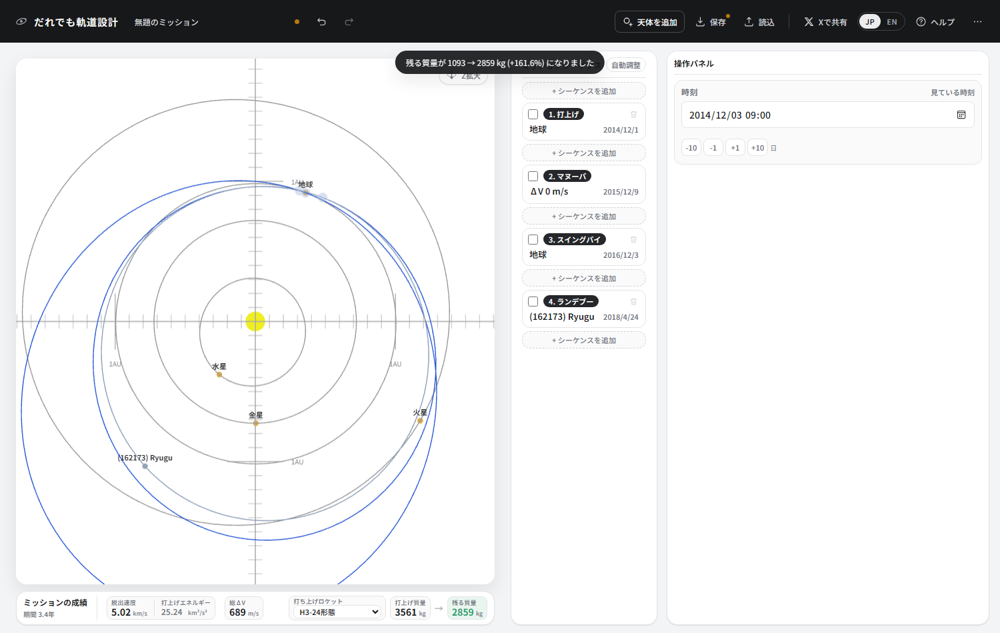

④ 小惑星に横づけする
はやぶさ2が向かった小惑星リュウグウへ、地球スイングバイを使って行きます。 通り過ぎるのではなく速度を合わせて並んで進むので、惑星に行くのとは勝手が違います。
ここで覚えること
- 掲載されていない天体を一覧に追加する
- フライバイとランデブーの違い
- 噴射なしで地球に戻る「共鳴」の軌道
- 小天体はスイングバイに使えない
リュウグウを呼び出す
画面上のバーの「天体を追加」を押します。 小惑星・彗星・恒星間天体の目録 (国際天文学連合 小惑星センターのデータ) から検索できます。
検索欄に Ryugu か 162173 と入れて、出てきた
(162173) Ryugu を選び、「追加」を押してください。
以後、天体の欄にリュウグウが並びます。
組み立てる
-
シーケンスを3つ作ります。
番号 種別 天体 日付 1 打上げ 地球 2014/12/03 2 スイングバイ 地球 2016/12/17 3 ランデブー (162173) Ryugu 2018/03/12 
小天体で選べる種別はフライバイとランデブーです。 スイングバイや周回軌道投入は出てきません。重力が小さすぎて、軌道を曲げることも捕まることもできないからです。
打上げ日ははやぶさ2の実際の日付です。地球スイングバイは実機が2015年12月 (打上げの1年後) でしたが、 ここでは2年後にしています。理由は後で説明します。
また地球から地球

同じ手を使います。打上げの節を手動にして、噴射の節を後ろに付け、 その日付を1年後 (2015/12/15、遠日点のあたり) に。 打上げの脱出速度を 4.7 km/s、角度は両方0にしてから、自動調整を押します。

噴射が 0 になる

チュートリアル③のJunoでは662 m/s必要だった深宇宙の噴射が、ここでは0です。 種明かしは打上げの脱出速度 5.0 km/s にあります。 この速さで地球を出ると、探査機の公転周期がちょうど2年になります。 2年後、探査機が1周して戻ってきたとき、地球も2周して同じ場所にいる。 何もしなくても再会できるのです。
チュートリアル②でマリナー10号が水星と会った仕組みと同じ、共鳴です。 軌道の周期を天体の周期の整数倍にすると、燃料を使わずに再会できます。
スイングバイとランデブー

地球のそばを通ることで軌道が曲げられ、リュウグウの軌道に届くようになります。ここも噴射は0です。

最後がランデブーです。到着ΔV 687 m/s は、リュウグウに速度を合わせて 並んで進むために要る噴射です。ここをフライバイに変えてみてください。 ΔVは0になります — 通り過ぎるだけなら、何もしなくていいのです。
これが小天体を相手にするときの勘所です。惑星なら重力が助けてくれる (捕まえてくれる) ところを、 小惑星では全部自分の燃料で払うことになります。 リュウグウの重力は弱すぎて、周回軌道という考え方すら成り立ちません。 はやぶさ2が「周回」ではなく「ホームポジションに留まる」と言っていたのはこのためです。
できあがり

| 項目 | この設計 | 実際のはやぶさ2 |
|---|---|---|
| 打上げ | 2014/12/04 | 2014/12/03 |
| 打上げエネルギー C3 | 25.2 km²/s² | 22.4 km²/s² |
| 地球スイングバイ | 2016/12/03 | 2015/12/03 |
| リュウグウ到着 | 2018/04/23 | 2018/06/27 |
| 深宇宙での噴射 | 0 m/s (2年共鳴) | イオンエンジンで約1 km/s |
| 総ΔV | 688 m/s | — |
この先
はやぶさ2はここからサンプルを積んで地球に帰ってきました。 チュートリアル①でやった帰りの組み立てを、ここに足してみてください。 リュウグウの節の後ろに再出発を足し、 最後に地球への大気圏突入を置きます。 実機のカプセルは2020年12月5日に、11.6 km/sでオーストラリアに帰ってきました。